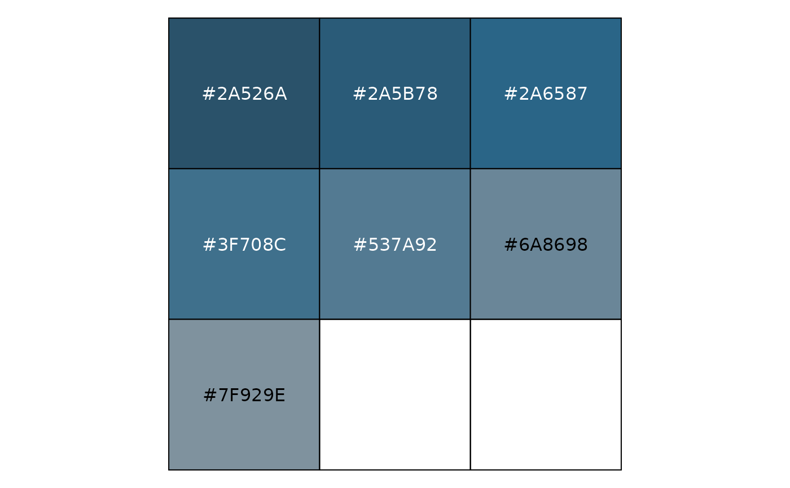

Function to generate new color palettes by interpolation.
interpolate2(palette, color = color, degree = degree, number = number)
| palette | a vector of colors to be interpolated |
|---|---|
| color | color (hex-code) to be mixed with the colors in the 'palette'. |
| degree | degree of interpolation, range: 1 (slight interpolation) - 7 (strong interpolation). |
| number | number of colors to be generated. |
#interpolate the 'zhblue'-palette with black and generate 7 new ones interpolate2(palette = zhpal$zhblue, color = c("#000000"), degree = 3, number = 7)#> [1] "#2A526A" "#2A5B78" "#2A6587" "#3F708C" "#537A92" "#6A8698" "#7F929E"